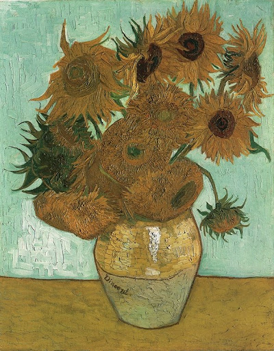

Vincent van Gogh
Some of van Goghs Paintings



Facts and stuff
- Vincent van Gogh was a dutch painter
- He was born in 1853 on the 30th of March, and died on the 29th of July, 1890
- His mother was an artist, so he had been drawing from a young age
- He began to work as an art dealer in London, but then started to suffer from mental illness.
- van Gogh decided to become an artist in 1881
- Van Gogh painted over 2100 paintings in just a decade
- He cut off his ear after pulling a knife out on his friend.
- Van Gogh's brother Theo, helped support him financially
- He shot himself at the age of 37 and a few days later, he died
- While he was alive, van Gogh was unsuccessful as people saw him as crazy. But now, he is now one of the most famous artists and his art has sold for a lot.